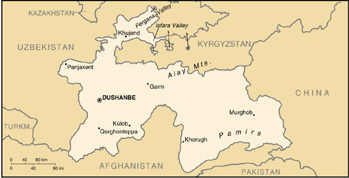

|
Tajikistan | |
| Introduction Geography People Government Economy Communications Transportation Military Transnational Issues | ||
|  | ||
| Tajikistan | Introduction | Top of Page |
| Background: | Tajikistan has experienced three changes in government and a five-year civil war since it gained independence in 1991 from the USSR. A peace agreement among rival factions was signed in 1997, and implementation reportedly completed by late 1999. Part of the agreement required the legalization of opposition political parties prior to the 1999 elections, which occurred, but such parties have made little progress in successful participation in government. Random criminal and political violence in the country remains a complication impairing Tajikistan's ability to engage internationally. |
| Tajikistan | Geography | Top of Page |
| Location: | Central Asia, west of China |
| Geographic coordinates: | 39 00 N, 71 00 E |
| Map references: | Commonwealth of Independent States |
| Area: |
total:
143,100 sq km
land: 142,700 sq km water: 400 sq km |
| Area - comparative: | slightly smaller than Wisconsin |
| Land boundaries: |
total:
3,651 km
border countries: Afghanistan 1,206 km, China 414 km, Kyrgyzstan 870 km, Uzbekistan 1,161 km |
| Coastline: | 0 km (landlocked) |
| Maritime claims: | none (landlocked) |
| Climate: | midlatitude continental, hot summers, mild winters; semiarid to polar in Pamir Mountains |
| Terrain: | Pamir and Alay mountains dominate landscape; western Fergana Valley in north, Kofarnihon and Vakhsh Valleys in southwest |
| Elevation extremes: |
lowest point:
Syrdariya 300 m
highest point: Pik Imeni Ismail Samani 7,495 m |
| Natural resources: | hydropower, some petroleum, uranium, mercury, brown coal, lead, zinc, antimony, tungsten, silver, gold |
| Land use: |
arable land:
6%
permanent crops: 0% permanent pastures: 25% forests and woodland: 4% other: 65% (1993 est.) |
| Irrigated land: | 6,390 sq km (1993 est.) |
| Natural hazards: | NA |
| Environment - current issues: | inadequate sanitation facilities; increasing levels of soil salinity; industrial pollution; excessive pesticides; part of the basin of the shrinking Aral Sea suffers from severe overutilization of available water for irrigation and associated pollution |
| Environment - international agreements: |
party to:
Biodiversity, Climate Change, Desertification, Environmental Modification, Ozone Layer Protection
signed, but not ratified: none of the selected agreements |
| Geography - note: | landlocked |
| Tajikistan | People | Top of Page |
| Population: | 6,578,681 (July 2001 est.) |
| Age structure: |
0-14 years:
41.18% (male 1,367,194; female 1,341,967)
15-64 years: 54.22% (male 1,773,605; female 1,793,345) 65 years and over: 4.6% (male 131,009; female 171,561) (2001 est.) |
| Population growth rate: | 2.12% (2001 est.) |
| Birth rate: | 33.23 births/1,000 population (2001 est.) |
| Death rate: | 8.57 deaths/1,000 population (2001 est.) |
| Net migration rate: | -3.49 migrant(s)/1,000 population (2001 est.) |
| Sex ratio: |
at birth:
1.05 male(s)/female
under 15 years: 1.02 male(s)/female 15-64 years: 0.99 male(s)/female 65 years and over: 0.76 male(s)/female total population: 0.99 male(s)/female (2001 est.) |
| Infant mortality rate: | 116.09 deaths/1,000 live births (2001 est.) |
| Life expectancy at birth: |
total population:
64.18 years
male: 61.09 years female: 67.42 years (2001 est.) |
| Total fertility rate: | 4.29 children born/woman (2001 est.) |
| HIV/AIDS - adult prevalence rate: | less than 0.01% (1999 est.) |
| HIV/AIDS - people living with HIV/AIDS: | less than 100 (1999 est.) |
| HIV/AIDS - deaths: | less than 100 (1999 est.) |
| Nationality: |
noun:
Tajikistani(s)
adjective: Tajikistani |
| Ethnic groups: | Tajik 64.9%, Uzbek 25%, Russian 3.5% (declining because of emigration), other 6.6% |
| Religions: | Sunni Muslim 80%, Shi'a Muslim 5% |
| Languages: | Tajik (official), Russian widely used in government and business |
| Literacy: |
definition:
age 15 and over can read and write
total population: 98% male: 99% female: 97% (1989 est.) |
| Tajikistan | Government | Top of Page |
| Country name: |
conventional long form:
Republic of Tajikistan
conventional short form: Tajikistan local long form: Jumhurii Tojikiston local short form: none former: Tajik Soviet Socialist Republic |
| Government type: | republic |
| Capital: | Dushanbe |
| Administrative divisions: |
2 oblasts (viloyatho, singular - viloyat) and one autonomous oblast* (viloyati mukhtori); Viloyati Mukhtori Kuhistoni Badakhshon* (Khorugh - formerly Khorog), Viloyati Khatlon (Qurghonteppa - formerly Kurgan-Tyube), Viloyati Leninobod (Khujand - formerly Leninabad)
note: the administrative center name follows in parentheses |
| Independence: | 9 September 1991 (from Soviet Union) |
| National holiday: | Independence Day, 9 September (1991) |
| Constitution: | 6 November 1994 |
| Legal system: | based on civil law system; no judicial review of legislative acts |
| Suffrage: | 18 years of age; universal |
| Executive branch: |
chief of state:
President Emomali RAHMONOV (since 6 November 1994; head of state and Supreme Assembly chairman since 19 November 1992)
head of government: Prime Minister Oqil OQILOV (since 20 January 1999) cabinet: Council of Ministers appointed by the president, approved by the Supreme Assembly elections: president elected by popular vote for a seven-year term; election last held 6 November 1999 (next to be held NA 2006); prime minister appointed by the president election results: Emomali RAHMONOV elected president; percent of vote - Emomali RAHMONOV 97%, Davlat USMON 2% |
| Legislative branch: |
bicameral Supreme Assembly or Majlisi Oli consists of the Assembly of Representatives (lower chamber) or Majlisi Namoyandagon (63 seats; members are elected by popular vote to serve five-year terms) and National Assembly (upper chamber) or Majlisi Milliy (33 seats; members are indirectly elected, 25 selected by local deputies, 8 appointed by the president; all to serve five-year terms)
elections: last held 27 February and 12 March 2000 for the Assembly of Representatives (next to be held NA 2005) and 23 March 2000 for the National Assembly (next to be held NA 2005) election results: Assembly of Representatives - percent of vote by party - PDPT 65%, Communist Party 20%, Islamic Rebirth Party 7.5%, other 7.5%; seats by party - NA; National Assembly - percent of vote by party - NA%; seats by party - NA |
| Judicial branch: | Supreme Court (judges are appointed by the president) |
| Political parties and leaders: | Congress of People's Unity of Tajikistan [Saiffidin TURAYEV]; Democratic Party or TDP [Mahmadruzi ISKANDAROV, chairman]; Islamic Rebirth Party [Muhammadsharif HIMMAT-ZODA, chairman]; Lali Badakhshan Movement [Atobek AMIRBEKOV]; National Movement Party [Hakim MUHHABATOV]; Party of Justice and Development [Rahmatullo ZOIROV]; People's Democratic Party of Tajikistan or PDPT [Emomali RAHMONOV]; Rastokhez (Rebirth) Movement [Tohiri ABDUJABBOR]; Socialist Party [Sherali KENJAEV]; Tajik Communist Party or CPT [Shodi SHABDOLOV]; Adolatho "Justice" Party [Abdurahmon KARIMOV, chairman] |
| Political pressure groups and leaders: | NA |
| International organization participation: | AsDB, CCC, CIS, EAPC, EBRD, ECE, ECO, ESCAP, FAO, IBRD, ICAO, ICRM, IDA, IDB, IFAD, IFC, IFRCS, ILO, IMF, Intelsat, IOC, IOM, ITU, OIC, OPCW, OSCE, UN, UNCTAD, UNESCO, UNIDO, UPU, WFTU, WHO, WIPO, WMO, WTrO (observer) |
| Diplomatic representation in the US: | Tajikistan does not have an embassy in the US, but does have a permanent mission to the UN: address - 136 East 67th Street, New York, NY 10021, telephone - [1] (212) 472-7645, FAX - [1] (212) 628-0252; permanent representative to the UN is Rashid ALIMOV |
| Diplomatic representation from the US: |
chief of mission:
Ambassador Robert P. J. FINN
embassy: temporarily collocated with the US Embassy in Almaty (Kazakhstan) mailing address: use embassy street address telephone: NA FAX: NA |
| Flag description: | three horizontal stripes of red (top), a wider stripe of white, and green; a gold crown surmounted by seven gold, five-pointed stars is located in the center of the white stripe |
| Tajikistan | Economy | Top of Page |
| Economy - overview: | Tajikistan has the lowest per capita GDP among the 15 former Soviet republics. Cotton is the most important crop. Mineral resources, varied but limited in amount, include silver, gold, uranium, and tungsten. Industry consists only of a large aluminum plant, hydropower facilities, and small obsolete factories mostly in light industry and food processing. The Tajikistani economy has been gravely weakened by six years of civil conflict and by the loss of subsidies from Moscow and of markets for its products. Most of its people live in abject poverty. Tajikistan depends on aid from Russia and Uzbekistan and on international humanitarian assistance for much of its basic subsistence needs. The future of Tajikistan's economy and the potential for attracting foreign investment depend upon stability and continued progress in the peace process. |
| GDP: | purchasing power parity - $7.3 billion (2000 est.) |
| GDP - real growth rate: | 5.1% (2000 est.) |
| GDP - per capita: | purchasing power parity - $1,140 (2000 est.) |
| GDP - composition by sector: |
agriculture:
19.8%
industry: 18.1% services: 62.1% (1998) |
| Population below poverty line: | 80% (2000 est.) |
| Household income or consumption by percentage share: |
lowest 10%:
NA%
highest 10%: NA% |
| Inflation rate (consumer prices): | 33% (2000 est.) |
| Labor force: | 1.9 million (1996) |
| Labor force - by occupation: | agriculture 50%, industry 20%, services 30% (1997 est.) |
| Unemployment rate: | 5.7% includes only officially registered unemployed; also large numbers of underemployed workers and unregistered unemployed people (December 1998) |
| Budget: |
revenues:
$146 million
expenditures: $196 million, including capital expenditures of $NA (2000 est.) |
| Industries: | aluminum, zinc, lead, chemicals and fertilizers, cement, vegetable oil, metal-cutting machine tools, refrigerators and freezers |
| Industrial production growth rate: | 10% (2000 est.) |
| Electricity - production: | 15.623 billion kWh (1999) |
| Electricity - production by source: |
fossil fuel:
1.9%
hydro: 98.1% nuclear: 0% other: 0% (1999) |
| Electricity - consumption: | 14.729 billion kWh (1999) |
| Electricity - exports: | 3.9 billion kWh (1999) |
| Electricity - imports: | 4.1 billion kWh (1999) |
| Agriculture - products: | cotton, grain, fruits, grapes, vegetables; cattle, sheep, goats |
| Exports: | $761 million (f.o.b., 2000 est.) |
| Exports - commodities: | aluminum, electricity, cotton, fruits, vegetable oil, textiles |
| Exports - partners: | Liechtenstein 26%, Uzbekistan 20%, Russia 8% (1998) |
| Imports: | $782 million (f.o.b., 2000 est.) |
| Imports - commodities: | electricity, petroleum products, aluminum oxide, machinery and equipment, foodstuffs |
| Imports - partners: | Europe 32.3%, Uzbekistan 29%, Russia 13.6% (1998) |
| Debt - external: | $1.3 billion (1999 est.) |
| Economic aid - recipient: | $64.7 million (1995) |
| Currency: | somoni |
| Currency code: | SM |
| Exchange rates: |
Tajikistani somoni per US dollar - 2.2 (January 2001), 1550 (January 2000), 998 (January 1999), 350 (January 1997), 284 (January 1996)
note: the new unit of exchange was introduced on 30 October 2000, with one somoni equal to 1,000 of the old Tajikistani rubles |
| Fiscal year: | calendar year |
| Tajikistan | Communications | Top of Page |
| Telephones - main lines in use: | 363,000 (1997) |
| Telephones - mobile cellular: | 2,500 (1997) |
| Telephone system: |
general assessment:
poorly developed and not well maintained; many towns are not reached by the national network
domestic: cable and microwave radio relay international: linked by cable and microwave radio relay to other CIS republics and by leased connections to the Moscow international gateway switch; Dushanbe linked by Intelsat to international gateway switch in Ankara (Turkey); satellite earth stations - 1 Orbita and 2 Intelsat |
| Radio broadcast stations: | AM 9, FM 6, shortwave 5 (1998) |
| Radios: | 1.291 million (1991) |
| Television broadcast stations: | 0 (there are, however, repeaters that relay programs from Russia, Iran, and Turkey) (1997) |
| Televisions: | 860,000 (1991) |
| Internet country code: | .tj |
| Internet Service Providers (ISPs): | NA |
| Internet users: | 2,000 (2000) |
| Tajikistan | Transportation | Top of Page |
| Railways: | total: 480 km in common carrier service; does not include industrial lines (1990) |
| Highways: |
total:
29,900 km
paved: 21,400 km (these roads are said to be hard-surfaced, and include, in addition to conventionally paved roads, some that are surfaced with gravel or other coarse aggregate, making them trafficable in all weather) unpaved: 8,500 km (these roads are made of unstabilized earth and are difficult to negotiate in wet weather) (1990) |
| Waterways: | none |
| Pipelines: | natural gas 400 km (1992) |
| Ports and harbors: | none |
| Airports: | 53 (2000 est.) |
| Airports - with paved runways: |
total:
2
1,524 to 2,437 m: 1 under 914 m: 1 (2000 est.) |
| Airports - with unpaved runways: |
total:
51
over 3,047 m: 1 1,524 to 2,437 m: 2 914 to 1,523 m: 12 under 914 m: 36 (2000 est.) |
| Tajikistan | Military | Top of Page |
| Military branches: | Army, Air Force, Air Defense Forces, Presidential National Guard, Security Forces (internal and border troops) |
| Military manpower - military age: | 18 years of age |
| Military manpower - availability: | males age 15-49: 1,586,700 (2001 est.) |
| Military manpower - fit for military service: | males age 15-49: 1,300,252 (2001 est.) |
| Military manpower - reaching military age annually: | males: 72,056 (2001 est.) |
| Military expenditures - dollar figure: | $17 million (FY97) |
| Military expenditures - percent of GDP: | 1.8% (FY97) |
| Tajikistan | Transnational Issues | Top of Page |
| Disputes - international: | portions of Tajikistan's northern and western border with Uzbekistan and its eastern border with China have not been officially demarcated; territorial dispute with Kyrgyzstan on northern boundary in Isfara Valley area |
| Illicit drugs: | major transshipment zone for heroin and opiates from Afghanistan going to Russia and Western Europe; limited illicit cultivation of cannabis, mostly for domestic consumption |
{kind=link}
{kind=link}